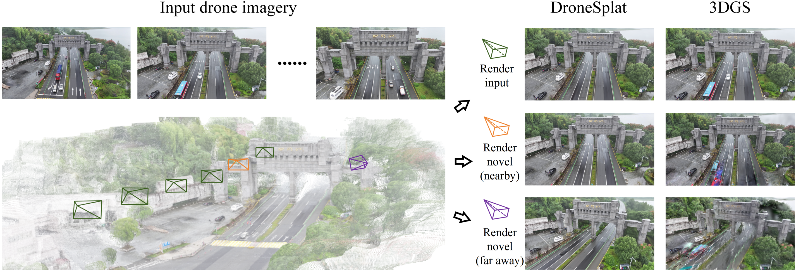
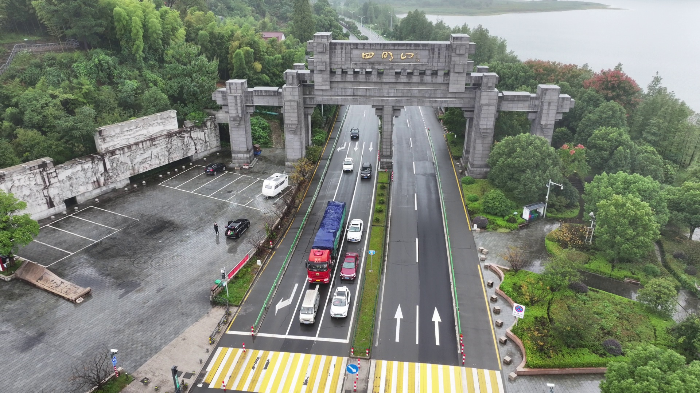
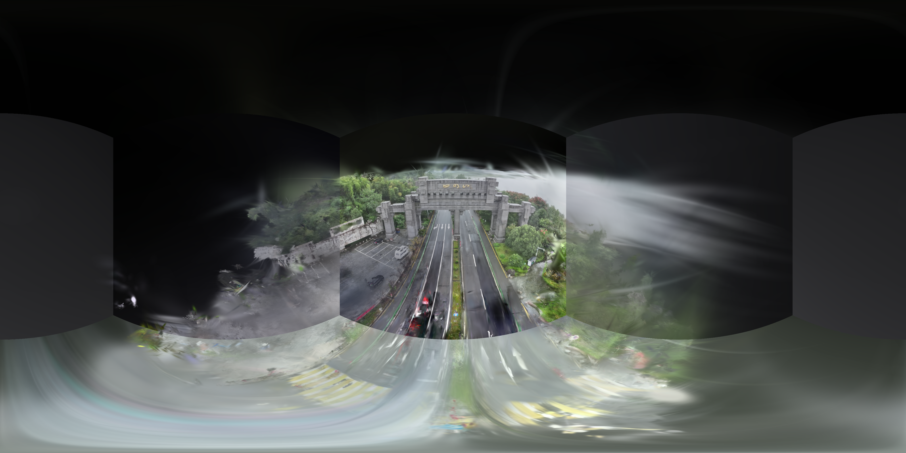

01Ringkasan
DroneSplat menyelesaikan dua masalah utama saat merekonstruksi scene 3D dari foto drone di dunia nyata: objek bergerak (mobil, orang) yang merusak asumsi “scene statis”, dan sudut pandang terbatas (beberapa area hanya terlihat dari sedikit foto).
Inti idenya
- Adaptive Local-Global Masking — menyembunyikan piksel objek dinamis dari loss, ambangnya menyesuaikan otomatis.
- Voxel-guided 3DGS — inisialisasi dari multi-view stereo (DUSt3R) + optimasi yang dibatasi grid voxel agar geometri tetap akurat saat view sedikit.
Yang kita lakukan
- Membangun environment CUDA dari nol (Windows + RTX 4080).
- Menjalankan pipeline penuh pada 2 scene: Simingshan & Sculpture.
- Membuat viewer interaktif: orbit 3DGS & panorama 360°.

02Setup environment
Tantangan terbesar: mesin ini memakai Visual Studio 2025 (MSVC 14.5) yang ditolak nvcc CUDA 12.1. Solusinya memakai nvcc 12.6 untuk kompilasi sementara PyTorch tetap di runtime cu121.
conda create -n dronesplat python=3.11environment dasar
torch 2.4.0 + cu121PyTorch dengan CUDA 12.1, terdeteksi GPU RTX 4080
numpy < 2diturunkan ke 1.26.4 (decord crash di NumPy 2)
cuda-nvcc 12.6kompilasi ekstensi CUDA agar kompatibel VS2025
simple-knn, diff-gaussian-rasterizationekstensi CUDA 3DGS (dibuild dari source)
sam2 (editable)Segment Anything Model v2
Verifikasi: torch.cuda.is_available() → True, semua ekstensi CUDA ter-import. Dataset (Simingshan + Sculpture) diunduh dari Google Drive resmi — sudah menyertakan pose kamera COLMAP, sehingga langkah DUSt3R opsional.
03Pipeline 4 tahap
Alur yang kita jalankan untuk tiap scene:
Segmentasi 2D
SAM2 menyegmentasi semua instance tiap gambar → masks.json
Training 3DGS
7.000 iterasi, loss L1+SSIM dengan masking per-instance (--use_masks)
Render
Render ulang gambar train & test dari model Gaussian
Evaluasi
Hitung PSNR / SSIM / LPIPS vs ground truth
sam2_hiera_l.yaml) menangkap file stub kosong → error Key 'model' is not in struct.
Perbaikan: gunakan --model_cfg configs/sam2/sam2_hiera_l.yaml. Training memakai ambang instance --preset_instance_threshold 0.4 dan mulai masking di iterasi 500 — keduanya persis nilai paper (λL=0.4, masking aktif di 500).
Contoh segmentasi SAM2


04Hasil rekonstruksi kita
Kedua scene berhasil direkonstruksi (7.000 iterasi, ~7–12 menit di RTX 4080). Metrik pada test set:
🏯 Simingshan gerbang & jalan · 24 foto
🗿 Sculpture patung & taman · 42 foto
Perbandingan ground-truth (kiri) vs hasil render (kanan). Perhatikan: mobil & orang yang bergerak ikut hilang di hasil render — efek langsung dari masking distraktor.


Catatan: angka kita berasal dari train.py rilis open-source (masking residual per-instance + inisialisasi COLMAP), bukan pipeline penuh paper (DUSt3R + voxel-guided + global tracking). Jadi tidak langsung sebanding dengan tabel paper — lihat Paper ↔ kode kita.
05Viewer interaktif
Dua cara melihat hasil 3D (server lokal python -m http.server 8765 harus berjalan di folder viewer/):
🛰️ Orbit 3DGS
Model 3D asli (Simingshan 1,43 jt Gaussian · Sculpture 3,07 jt). Drag untuk memutar, scroll zoom.
🌐 Panorama 360°
Gaya Street View, dirender 6 sisi kubus lalu digabung equirectangular.

06Masalah yang dipecahkan paper
① Scene dinamis (distraktor)
Objek bergerak (mobil, pejalan kaki) melanggar asumsi konsistensi multi-view 3DGS/NeRF → muncul artefak & floater.
Metode lama: segmentasi semantik (butuh kelas terdefinisi, gagal bedakan mobil parkir vs melaju) atau residual (gagal untuk distraktor kecil khas drone). Banyak yang pakai ambang tetap sepanjang training.
② Sudut pandang terbatas
Dalam satu penerbangan, sebagian area hanya tertangkap oleh ~3 foto. Radiance field jadi overfit ke input → kualitas novel view buruk.
InstantSplat memakai prior MVS (DUSt3R) untuk inisialisasi, tapi tanpa batasan pada optimasi 3DGS berikutnya sehingga prior kaya itu terbuang.
07Framework keseluruhan
Dua pilar metode bekerja bersama di atas 3DGS:
MVS Priors
DUSt3R memprediksi point cloud padat + confidence dari foto tak berpose
Point Sampling
Sampling berbasis confidence + fitur geometri (FPFH) per voxel
Voxel-guided 3DGS
Inisialisasi Gaussian + optimasi yang dibatasi voxel
Adaptive Masking
Residual per-objek → mask lokal adaptif + mask global (tracking SAM2)
08Adaptive Local-Global Masking
Tujuan: mengenali piksel distraktor dinamis lalu menyembunyikannya dari loss — tanpa kelas terdefinisi, dan dengan ambang yang menyesuaikan diri tiap scene & tahap training.
Langkah 1 — Residual ternormalisasi per objek
Hitung residual antara render dan GT, normalkan L1 & D-SSIM, gabungkan. SAM2 memberi mask tiap objek; semua piksel satu objek berbagi satu nilai residual rata-rata.
Langkah 2 — Adaptive Local Masking
Daripada ambang tetap, ambang dihitung dari statistik residual frame: ekspektasi + variansi, dengan pelonggaran di awal training (saat objek belum konvergen).
Objek dengan residual rata-rata > TL ditandai sebagai distraktor. Hampir semua objek statis berada dalam 1 standar deviasi dari ekspektasi → yang melewati ambang = dinamis.
Langkah 3 — Complement Global Masking
Masalah: objek bisa diam sementara (mis. mobil berhenti di lampu merah) sehingga lolos mask lokal di frame itu. Solusi: ambang global lebih ketat (λG > 1+λL); begitu sebuah objek pernah melebihi TG, ia jadi kandidat tracking — 5 titik prompt (pusat + 4 tepi) dikirim ke kemampuan video-tracking SAM2 untuk menandainya di semua frame.
09Voxel-guided Gaussian Splatting
Tujuan: geometri akurat meski view terbatas, dengan memanfaatkan prior MVS tanpa membuat 3DGS “kebablasan” saat optimasi.
Geometric-aware Point Sampling
DUSt3R menghasilkan point cloud padat (sering over-parameter & ada deviasi posisi). Alih-alih memakai semuanya, paper menyaring: ruang dibagi N voxel, tiap titik diberi skor gabungan confidence × fitur geometri FPFH, lalu hanya top-k titik per voxel yang dipakai untuk inisialisasi Gaussian.
Voxel-guided Optimization
Setiap Gaussian “terikat” pada voxel-nya. Jika pusat/skalanya melewati batas (τ × panjang voxel) ia ditandai unconstrained; gradiennya meluruh eksponensial terhadap jarak dari pusat voxel. Gaussian baru hanya di-split/clone ke voxel kosong bila gradien akumulatif melewati γ₁. Voxel “sampah” (terlalu sedikit Gaussian < γ₂, atau opacity rata-rata < γ₃) dibuang.
10Dataset DroneSplat
Paper merilis dataset 24 sekuens drone in-the-wild — scene dinamis (dibagi 3 level berdasarkan jumlah distraktor) & statis. Eksperimen memakai:
- Eliminasi distraktor — 6 scene berbagai level dinamis (termasuk Simingshan & Sculpture yang kita pakai), foto cukup banyak agar bukan masalah sparsity.
- Rekonstruksi view terbatas — 2 scene statis dengan hanya 6 foto input.
- Juga diuji di NeRF On-the-go & UrbanScene3D.
11Hasil kuantitatif paper
Dilatih pada gambar dengan distraktor, dievaluasi pada gambar tanpa distraktor. “Ours” = metode penuh; “Ours (COLMAP)” = inisialisasi COLMAP + 3DGS vanilla (kontrol). Sumber: Figure 6 paper.
| Metode | Simingshan (high-dynamic) | Sculpture | ||||
|---|---|---|---|---|---|---|
| PSNR↑ | SSIM↑ | LPIPS↓ | PSNR↑ | SSIM↑ | LPIPS↓ | |
| 3DGS (vanilla) | 17.04 | 0.438 | 0.228 | 17.11 | 0.396 | 0.256 |
| Mip-Splatting | 17.26 | 0.441 | 0.210 | 17.22 | 0.404 | 0.249 |
| GS-W | 17.44 | 0.416 | 0.424 | 17.09 | 0.414 | 0.270 |
| WildGaussians | 16.96 | 0.388 | 0.379 | 17.15 | 0.371 | 0.383 |
| NeRF On-the-go | 15.58 | 0.318 | 0.471 | 17.04 | 0.228 | 0.606 |
| Ours (COLMAP) | 17.89 | 0.462 | 0.217 | 19.51 | 0.528 | 0.197 |
| Ours | 17.79 | 0.469 | 0.214 | 19.64 | 0.517 | 0.192 |
Pada Sculpture, DroneSplat unggul jelas (PSNR 19.6 vs ~17 baseline). Pada Simingshan (sangat dinamis) selisihnya lebih tipis namun tetap memimpin di SSIM & LPIPS.
Rekonstruksi view terbatas (hanya 6 foto)
| Metode | DroneSplat-static · Exhibition Hall | UrbanScene3D · ArtSci | ||||
|---|---|---|---|---|---|---|
| PSNR↑ | SSIM↑ | LPIPS↓ | PSNR↑ | SSIM↑ | LPIPS↓ | |
| 3DGS | 15.64 | 0.404 | 0.374 | 19.01 | 0.595 | 0.201 |
| Scaffold-GS | 16.55 | 0.445 | 0.343 | 19.69 | 0.618 | 0.183 |
| FSGS | 15.92 | 0.424 | 0.411 | 20.32 | 0.651 | 0.240 |
| InstantSplat | 17.37 | 0.393 | 0.398 | 16.16 | 0.325 | 0.364 |
| Ours | 18.09 | 0.496 | 0.352 | 20.47 | 0.639 | 0.215 |
12Studi ablasi
Setiap komponen berkontribusi. Pada scene dinamis, menambah Local Masking → Global Masking → Voxel-guided menaikkan kualitas bertahap:
| Konfigurasi | Local | Global | Voxel | PSNR↑ | SSIM↑ | LPIPS↓ |
|---|---|---|---|---|---|---|
| (a) baseline | ✗ | ✗ | ✗ | 19.02 | 0.552 | 0.244 |
| (b) + Local Masking | ✓ | ✗ | ✗ | 20.71 | 0.609 | 0.223 |
| (c) + Global Masking | ✓ | ✓ | ✗ | 20.74 | 0.616 | 0.221 |
| (d) + Voxel-guided (penuh) | ✓ | ✓ | ✓ | 20.86 | 0.618 | 0.217 |
Pada DroneSplat-static, ablasi Voxel-guided menunjukkan: prior MVS saja + 3DGS vanilla justru menurunkan kualitas (over-parameter), sementara point sampling + optimasi voxel-guided membawanya ke hasil terbaik (PSNR 16.0 → 18.1).
13Kontribusi utama
- Framework 3DGS robust pertama yang dirancang khusus untuk citra drone in-the-wild — menghapus distraktor dinamis sekaligus mengatasi optimasi tak terbatas pada view terbatas.
- Adaptive Local-Global Masking — memadukan heuristik segmentasi (lokal & global) dengan pendekatan statistik untuk eliminasi distraktor yang superior.
- Voxel-guided 3DGS — geometric-aware point sampling + optimasi terpandu voxel, memanfaatkan prior MVS tanpa kehilangan kapasitas representasi 3DGS.
- Merilis dataset 24 sekuens drone in-the-wild (dinamis & statis).
14Paper ↔ kode yang kita jalankan
Penting untuk konteks akademik — apa yang kita reproduksi vs metode penuh paper:
| Komponen paper | Di pipeline kita? | Catatan |
|---|---|---|
| SAM2 segmentasi instance | Ya | seg_all_instances.py |
| Masking residual per-instance | Ya (sederhana) | train.py --use_masks, ambang 0.4, mulai iter 500 |
| Adaptive threshold (E+Var) | Sebagian | train.py rilis pakai versi instance-loss yang disederhanakan |
| Global tracking (video SAM2) | Tidak | tidak diaktifkan di run kita |
| DUSt3R MVS priors | Tidak | kita pakai pose & titik COLMAP yang sudah disediakan |
| Voxel-guided optimization | Tidak | jalur opsional via preprocess.py |
Karena itu, run kita paling mirip baris “Ours (COLMAP)” tanpa voxel-guided — bukan metode penuh. Angka kita juga memakai split train/test apa adanya dari dataset, sehingga tidak 1:1 dengan protokol evaluasi paper (yang menguji pada gambar bebas-distraktor).